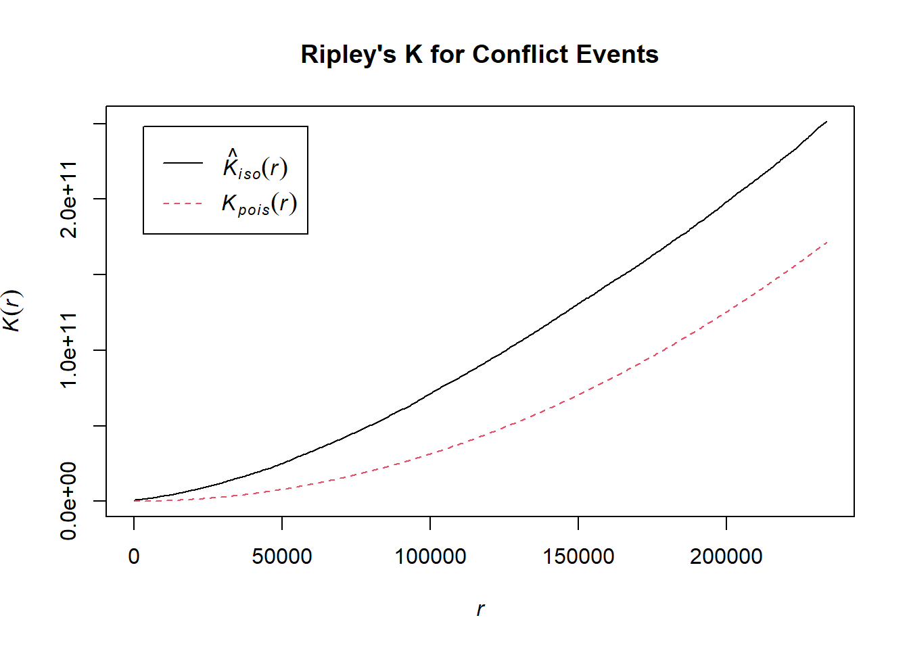

pacman::p_load(sf,tmap,tidyverse,spatstat,raster,sparr,animation,av,magick,htmltools)Take Home Exercise 1: Geospatial Analytics for Social Good: Application of Spatial and Spatio-temporal Point Patterns Analysis to discover the geographical distribution of Armed Conflict in Myanmar
The Armed Conflict in Myanmar: A Complex and Ongoing Crisis
Background
The armed conflict in Myanmar, also known as the Burmese Civil War, is a decades-long struggle that has been exacerbated by recent political developments. The conflict primarily involves the Myanmar military (Tatmadaw) and various ethnic armed organizations (EAOs) representing different ethnic minorities
Key Factors Contributing to the Conflict
Ethnic Tensions: Deep-rooted ethnic tensions and historical grievances have been a major driving force behind the conflict. Many ethnic minorities, such as the Rohingya, Karen, and Shan, have long sought greater autonomy or independence from the central government.
Military Dominance: The Tatmadaw has exercised significant control over Myanmar’s political and military affairs for decades. Its authoritarian rule and suppression of dissent have fueled resentment among many ethnic groups.
Resource Competition: Disputes over natural resources, such as timber, jade, and gas, have also contributed to the conflict. Control of these resources can provide significant economic and political advantages.
External Influences: Neighboring countries, such as China and Thailand, have sometimes been involved in the conflict, either directly or indirectly, through their support for different factions.
Recent Developments
The conflict escalated significantly following the 2021 military coup, which ousted the democratically elected government led by Aung San Suu Kyi.
The coup sparked widespread protests and civil disobedience, leading to a crackdown by the military. This crackdown has resulted in numerous casualties and human rights abuses.
In response to the coup, a number of armed resistance groups have emerged, including the People’s Defense Forces (PDFs), which are civilian-led militias fighting against the military. These groups have engaged in clashes with the Tatmadaw across the country.
Loading Library
- sf: This package provides simple features for representing spatial data in R. It allows you to work with various spatial data formats, such as shapefiles, GeoJSON, and WKT.
- tmap: This package is designed for creating thematic maps in R. It offers a high-level interface for customizing maps with different styles, colors, and labels.
- tidyverse: This is a collection of R packages that work together to provide a consistent and efficient data analysis workflow. It includes packages like dplyr for data manipulation, ggplot2 for data visualization, and readr for reading data files.
- spatstat: This package is specifically for spatial point pattern analysis. It provides tools for analyzing the distribution and patterns of points in a spatial region.
- raster: This package is used for working with raster data, such as images and digital elevation models. It allows you to read, write, manipulate, and analyze raster data.
- sparr: This package is for spatial point pattern analysis with regularly spaced data. It provides functions for estimating intensity functions, clustering, and other spatial point pattern analysis tasks.
- animation: This package provides tools for creating animations in R. It can be used to visualize changes in spatial data over time or to create interactive visualizations.
- av: Provides tools for handling audio and video files, including creating and manipulating video files
magick: A powerful package for image processing, including reading, manipulating, and writing images.
htmltools: Provides functions for working with HTML and creating HTML-based user interfaces.
Importing data
Conflict data:
read.csv("data/acled_mm.csv")reads a CSV file named “acled_mm.csv” and stores the data in a data frame namedconflict_data. This file likely contains data on armed conflicts in Myanmar, such as the location, date, type, and actors involved in each conflict.
Administrative boundary data:
st_read(dsn="data", layer = "mmr_polbnda_adm1_250k_mimu_1")reads a shapefile named “mmr_polbnda_adm1_250k_mimu_1” from the “data” directory and stores the data in a simple feature object namedboundary_data. This shapefile likely contains the administrative boundaries of different regions or states in Myanmar, such as the borders of each state or province
# Import the armed conflict data (2021-2024)
conflict_data <- read.csv("data/acled_mm.csv")
# Import administrative boundary data for Myanmar
boundary_data <- st_read(dsn="data",
layer = "mmr_polbnda_adm1_250k_mimu_1")Reading layer `mmr_polbnda_adm1_250k_mimu_1' from data source
`C:\edwing444\IS415-GAA\Take_Home_Ex\Take_home_ex1\data' using driver `ESRI Shapefile'
Simple feature collection with 15 features and 6 fields
Geometry type: MULTIPOLYGON
Dimension: XY
Bounding box: xmin: 92.1721 ymin: 9.696844 xmax: 101.17 ymax: 28.54554
Geodetic CRS: WGS 84summary(conflict_data) event_id_cnty event_date year time_precision
Length:37544 Length:37544 Min. :2021 Min. :1.000
Class :character Class :character 1st Qu.:2022 1st Qu.:1.000
Mode :character Mode :character Median :2022 Median :1.000
Mean :2023 Mean :1.052
3rd Qu.:2023 3rd Qu.:1.000
Max. :2024 Max. :3.000
disorder_type event_type sub_event_type actor1
Length:37544 Length:37544 Length:37544 Length:37544
Class :character Class :character Class :character Class :character
Mode :character Mode :character Mode :character Mode :character
assoc_actor_1 inter1 actor2 assoc_actor_2
Length:37544 Min. :1.000 Length:37544 Length:37544
Class :character 1st Qu.:1.000 Class :character Class :character
Mode :character Median :1.000 Mode :character Mode :character
Mean :1.958
3rd Qu.:3.000
Max. :8.000
inter2 interaction civilian_targeting iso
Min. :0.000 Min. :10.00 Length:37544 Min. :104
1st Qu.:1.000 1st Qu.:13.00 Class :character 1st Qu.:104
Median :3.000 Median :17.00 Mode :character Median :104
Mean :3.571 Mean :18.57 Mean :104
3rd Qu.:7.000 3rd Qu.:17.00 3rd Qu.:104
Max. :8.000 Max. :80.00 Max. :104
region country admin1 admin2
Length:37544 Length:37544 Length:37544 Length:37544
Class :character Class :character Class :character Class :character
Mode :character Mode :character Mode :character Mode :character
admin3 location latitude longitude
Length:37544 Length:37544 Min. : 9.982 Min. : 92.18
Class :character Class :character 1st Qu.:18.825 1st Qu.: 95.03
Mode :character Mode :character Median :21.634 Median : 95.93
Mean :20.696 Mean : 95.94
3rd Qu.:22.746 3rd Qu.: 97.04
Max. :27.505 Max. :100.36
geo_precision source source_scale notes
Min. :1.000 Length:37544 Length:37544 Length:37544
1st Qu.:1.000 Class :character Class :character Class :character
Median :1.000 Mode :character Mode :character Mode :character
Mean :1.482
3rd Qu.:2.000
Max. :3.000
fatalities tags timestamp
Min. : 0.000 Length:37544 Min. :1.631e+09
1st Qu.: 0.000 Class :character 1st Qu.:1.702e+09
Median : 0.000 Mode :character Median :1.714e+09
Mean : 1.343 Mean :1.703e+09
3rd Qu.: 1.000 3rd Qu.:1.719e+09
Max. :201.000 Max. :1.725e+09 The dataset appears to contain information on armed conflicts in Myanmar from 2021 to 2024. It includes various attributes that can be used for geospatial analysis:
Location Data:
latitude and longitude: These coordinates can be used to plot the locations of conflict events on a map.
geo_precision: This indicates the accuracy of the location data.
admin1, admin2, admin3: These likely represent administrative divisions such as states, districts, and townships, which can be used for spatial analysis at different scales.
Event Data:
event_date, year, time_precision: These attributes provide information about the date and time of the event.
disorder_type, event_type, sub_event_type: These categories describe the nature of the conflict event.
actor1, actor2: These likely refer to the actors involved in the conflict.
interaction: This might indicate the type of interaction between the actors (e.g., clashes, attacks).
fatalities: This provides information about the number of casualties.
summary(boundary_data) OBJECTID ST ST_PCODE ST_RG
Min. : 1.000 Length:15 Length:15 Length:15
1st Qu.: 5.500 Class :character Class :character Class :character
Median : 9.000 Mode :character Mode :character Mode :character
Mean : 9.133
3rd Qu.:12.500
Max. :18.000
ST_MMR PCode_V geometry
Length:15 Min. :9.4 MULTIPOLYGON :15
Class :character 1st Qu.:9.4 epsg:4326 : 0
Mode :character Median :9.4 +proj=long...: 0
Mean :9.4
3rd Qu.:9.4
Max. :9.4 The output from summary(boundary_data) provides information about the structure and content of the administrative boundary data:
Column Names:
OBJECTID: This column likely represents a unique identifier for each administrative unit.
ST: This column might contain the name or abbreviation of the state or region.
ST_PCODE: This could be a numerical or alphanumeric code associated with the state.
ST_RG: This might refer to a specific region or district within the state.
ST_MMR: This could be another identifier or code related to the state.
PCode_V: This column might contain a postal code or other location identifier.
Data Types:
OBJECTID: Numeric
ST, ST_PCODE, ST_RG, ST_MMR, PCode_V: Character
Summary Statistics:
- Min., 1st Qu., Median, Mean, 3rd Qu., Max.: These statistics provide information about the distribution of values in the
OBJECTIDandPCode_Vcolumns.
Cleaning data
# Filter the dataset for the relevant event types
conflict_filtered <- conflict_data %>%
filter(event_type %in% c("Battles", "Explosions/Remote violence", "Strategic developments", "Violence against civilians"))
# Convert the date column to Date format
conflict_filtered <- conflict_filtered %>%
mutate(event_date = dmy(event_date))Firstly we filter the conflict_data dataset to only include rows where the event_type is one of the specified types: “Battles”, “Explosions/Remote violence”, “Strategic developments”, or “Violence against civilians”. This is done to focus on the most relevant types of conflict events for the analysis.
Secondly, we convert the event_date column from its current format (presumably a character format) to a Date format using the dmy() function from the lubridate package. This is necessary for performing date-based calculations and visualizations.
# Create a column for quarterly intervals (e.g., Q1 2021, Q2 2021, etc.)
conflict_filtered <- conflict_filtered %>%
mutate(quarter = paste0(year(event_date), "-Q", quarter(event_date)))Firstly,
year(event_date)extracts the year from theevent_datecolumn.
quarter(event_date)extracts the quarter (1, 2, 3, or 4) from theevent_datecolumn
Next
paste0(year(event_date), "-Q", quarter(event_date)) concatenates the year and quarter values with a hyphen and the letter “Q” in between. This creates a string representing the quarterly interval, such as “2021-Q1” or “2022-Q3”.
Finally,we add the newly created quarter column to the conflict_filtered dataset.
# Convert conflict data into an `sf` object with geometry
conflict_sf <- st_as_sf(conflict_filtered, coords = c("longitude", "latitude"), crs = 4326)
# Ensure the boundary data and conflict data have the same CRS (coordinate reference system)
conflict_sf <- st_transform(conflict_sf, st_crs(boundary_data))We convert the conflict_filtered data frame into a simple feature object (sf object) using the st_as_sf() function from the sf package.
The
coordsargument specifies the columns containing the longitude and latitude coordinates (in this case, “longitude” and “latitude”).The
crsargument sets the coordinate reference system (CRS) of the resultingsfobject to 4326, which is the World Geodetic System 1984 (WGS84) coordinate system.
To ensure the matching CRS, we line transform the CRS of the conflict_sf object to match the CRS of the boundary_data object. This is important for spatial analysis and visualization, as the two datasets must have the same CRS to be combined or compared.
The st_transform() function is used to perform the CRS transformation. The st_crs(boundary_data) argument extracts the CRS of the boundary_data object.
Visualizing and understanding Data
# Plot spatial distribution of conflict events with boundary
ggplot() +
geom_sf(data = boundary_data, fill = "white", color = "gray") +
geom_sf(data = conflict_sf, aes(color = event_type), alpha = 0.6) +
scale_color_manual(values = c("Battles" = "red",
"Explosions/Remote violence" = "orange",
"Strategic developments" = "blue",
"Violence against civilians" = "purple")) +
theme_minimal() +
labs(title = "Spatial Distribution of Conflict Events (2021-2024)",
color = "Event Type")
Key Observations:
Uneven Distribution: The conflict events are not evenly distributed across Myanmar. There are regions with a higher concentration of events, particularly in the northern and eastern parts of the country.
Cluster Formation: The map reveals clusters of conflict events, suggesting that certain areas have experienced more intense conflict activity.
Spatial Patterns: The distribution of events appears to follow certain patterns, potentially influenced by geographical factors, historical grievances, or resource competition.
Event Type Variation: The use of different colors to represent different event types allows for a visual comparison of their spatial distributions. This reveals that certain types of events may be more prevalent in specific regions.
Analysis and Explanation:
Regional Hotspots: The concentration of conflict events in the northern and eastern regions of Myanmar indicates that these areas have been particularly affected by the ongoing conflict. This could be due to a variety of factors, such as the presence of ethnic minorities seeking greater autonomy, competition for resources, or historical grievances.
Spatial Patterns: The clustering of events suggests that conflict activity may be concentrated in areas with specific characteristics, such as border regions, resource-rich areas, or areas with strategic importance.
Event Type Distribution: The visual representation of different event types provides insights into the nature of the conflict in different regions. For example, if battles are more prevalent in certain areas, it may suggest a more intense military confrontation.
Potential Causal Factors: The spatial distribution of conflict events can be analyzed in conjunction with other geospatial data, such as population density, land use, or proximity to natural resources, to identify potential causal factors.
Overall, the map provides a valuable visual representation of the spatial dynamics of the conflict in Myanmar. It highlights areas of intense conflict activity, reveals potential patterns in the distribution of events, and allows for a comparison of different event types. By analyzing these spatial patterns, researchers and policymakers can gain a better understanding of the underlying causes and consequences of the conflict, and develop more effective strategies for addressing it.
# Temporal distribution of conflict events by quarter
ggplot(conflict_filtered, aes(x = quarter, fill = event_type)) +
geom_bar(position = "stack") +
scale_fill_manual(values = c("Battles" = "red",
"Explosions/Remote violence" = "orange",
"Strategic developments" = "blue",
"Violence against civilians" = "purple")) +
theme_minimal() +
labs(title = "Temporal Distribution of Conflict Events by Quarter (2021-2024)",
x = "Quarter", y = "Number of Events",
fill = "Event Type") +
theme(axis.text.x = element_text(angle = 45, hjust = 1))
Key Observations:
Fluctuations: The number of conflict events fluctuates over time, with periods of increased and decreased activity.
Seasonal Patterns: Some event types may exhibit seasonal patterns, with higher or lower occurrences during specific quarters of the year.
Event Type Dominance: Certain event types may be more prevalent than others during specific time periods.
Analysis and Explanation:
Temporal Trends: The chart reveals the overall trend of conflict activity over the four-year period. For example, there may be a general increase or decrease in the overall number of events.
Seasonal Patterns: Analyzing the fluctuations within each year can help identify any seasonal patterns. For instance, certain types of events may be more common during specific seasons due to factors such as weather conditions, agricultural activities, or religious holidays.
Event Type Dynamics: The chart allows for a comparison of the temporal trends of different event types. This can provide insights into the evolving nature of the conflict and the changing tactics of the involved parties.
Potential Causal Factors: The temporal trends can be analyzed in conjunction with other factors, such as political developments, economic conditions, or external influences, to identify potential causal factors.
Overall, the chart provides a valuable visual representation of the temporal dynamics of the conflict in Myanmar. It highlights periods of increased or decreased activity, reveals potential seasonal patterns, and allows for a comparison of different event types. By analyzing these temporal trends, researchers and policymakers can gain a better understanding of the factors driving the conflict and develop more effective strategies for addressing it.
# Line plot for number of events over time
conflict_summary <- conflict_filtered %>%
group_by(quarter, event_type) %>%
summarize(n = n())`summarise()` has grouped output by 'quarter'. You can override using the
`.groups` argument.ggplot(conflict_summary, aes(x = quarter, y = n, color = event_type, group = event_type)) +
geom_line(size = 1) +
scale_color_manual(values = c("Battles" = "red",
"Explosions/Remote violence" = "orange",
"Strategic developments" = "blue",
"Violence against civilians" = "purple")) +
theme_minimal() +
labs(title = "Trends in Conflict Events by Event Type (2021-2024)",
x = "Quarter", y = "Number of Events",
color = "Event Type") +
theme(axis.text.x = element_text(angle = 45, hjust = 1))Warning: Using `size` aesthetic for lines was deprecated in ggplot2 3.4.0.
ℹ Please use `linewidth` instead.Key Observations:
Varied Trends: Different event types exhibit distinct temporal patterns. Some show a steady increase, while others fluctuate or decline.
Peak Periods: Certain quarters or years experienced peaks in specific event types, indicating periods of heightened conflict activity.
Interrelations: The trends of different event types may be interrelated, suggesting that changes in one type of event may influence others.
Analysis and Explanation:
Event Type Dynamics: The chart reveals the unique temporal evolution of each event type. For example, “Battles” might have shown a significant increase in early 2022, followed by a decline, while “Violence against civilians” might have remained relatively consistent throughout the period.
Peak Periods: Identifying peak periods can help pinpoint critical junctures in the conflict. These periods might be associated with specific political events, military campaigns, or changes in the strategic landscape.
Interrelations: Analyzing the relationships between different event types can provide insights into the evolving nature of the conflict. For instance, an increase in “Strategic developments” might be followed by a subsequent rise in “Battles” as opposing forces adjust their strategies.
Potential Causal Factors: The temporal trends can be analyzed in conjunction with other factors, such as political developments, economic conditions, or external influences, to identify potential causal factors.
Overall, the chart provides a valuable visual representation of the temporal dynamics of the conflict in Myanmar. It highlights the unique trends of different event types, identifies peak periods, and suggests potential interrelations between events.
conflict_by_region <- st_join(conflict_sf, boundary_data) %>%
group_by(region = admin1) %>% # Replace admin1Name with the correct region column
summarize(n_conflicts = n())
# Histogram of conflict events by region
ggplot(conflict_by_region, aes(x = n_conflicts)) +
geom_histogram(binwidth = 800, fill = "steelblue", color = "black", alpha = 0.7) +
theme_minimal() +
labs(title = "Distribution of Conflict Events by Administrative Region",
x = "Number of Conflict Events",
y = "Frequency (Number of Regions)",
caption = "Each bin represents the number of conflict events in a region") +
theme(plot.title = element_text(size = 16, face = "bold"))Key Observations:
Skewed Distribution: The distribution is skewed to the right, indicating that most regions have a relatively low number of conflict events. However, there are a few regions with significantly higher levels of conflict.
Mode: The mode of the distribution appears to be between 3000 and 4000 conflict events, suggesting that this range is the most common among the regions.
Outliers: There are a few outliers with a very high number of conflict events, indicating that these regions have experienced significantly more intense conflict than the majority.
Analysis and Explanation:
Regional Disparities: The skewed distribution highlights the uneven impact of the conflict across different regions. While most regions have experienced relatively low levels of conflict, a few have been disproportionately affected.
Mode: The mode indicates the most common level of conflict intensity. This information can be used to characterize the typical level of conflict in the regions.
Outliers: The outliers represent regions with exceptional levels of conflict. These areas may require special attention in terms of conflict resolution, humanitarian assistance, and development initiatives.
Policy Implications: The histogram can inform policy decisions by providing insights into the distribution of conflict intensity. This information can help prioritize areas for intervention, allocate resources effectively, and develop targeted strategies for conflict resolution
Plot KDE of open street of Myanmar
# Ensure the boundary data and conflict data have the same CRS (projected to UTM zone 47N)
boundary_data_projected <- st_transform(boundary_data, crs = 32647)
conflict_sf_projected <- st_transform(conflict_sf, crs = 32647)
# Convert the boundary data to an owin object (window) for spatstat
boundary_win <- as.owin(st_geometry(boundary_data_projected))st_geometry(boundary_data_projected) extracts the geometry column from the boundary_data_projected object. This geometry column contains the spatial representation of the administrative boundaries.
as.owin(st_geometry(boundary_data_projected)) converts the extracted geometry into an owin object using the as.owin() function from the spatstat package.
An owin object is a special data structure used by the spatstat package to represent the observation window or region within which point patterns are analyzed.
# Convert conflict_sf_projected to ppp object
coords <- st_coordinates(conflict_sf_projected)
conflict_ppp <- ppp(x = coords[,1], y = coords[,2], window = boundary_win)Warning: 6 points were rejected as lying outside the specified windowWarning: data contain duplicated pointskde_open <- density.ppp(conflict_ppp, sigma = bw.diggle)
# Convert KDE result into a raster object
kde_raster <- raster(kde_open)coords <- st_coordinates(conflict_sf_projected) extracts the coordinates of the conflict events from the conflict_sf_projected object. The resulting coordinates are stored in a matrix with two columns: one for longitude and one for latitude.
conflict_ppp <- ppp(x = coords[,1], y = coords[,2], window = boundary_win) creates a ppp object (point pattern) using the extracted coordinates and the boundary_win object as the observation window. A ppp object is a data structure used by the spatstat package to represent point patterns.
kde_q3_2021 <- density.ppp(conflict_ppp, sigma = bw.diggle) performs KDE on the conflict_ppp object using the density.ppp() function from the spatstat package. KDE estimates the intensity function of the point pattern, which represents the probability of finding a point at a given location. The sigma argument specifies the bandwidth of the kernel used for estimation.
kde_raster <- raster(kde_q3_2021) converts the KDE result (which is a im object) into a raster object using the raster() function from the raster package. This allows for easier visualization and integration with other raster data.
# Assign projection to the raster
crs(kde_raster) <- "+proj=utm +zone=47 +datum=WGS84 +units=m +no_defs"
tm_shape(boundary_data_projected) +
tm_borders() +
tm_shape(kde_raster) +
tm_raster(palette = "-Blues",style = "cont", alpha = 0.6) +
tm_layout(title = "KDE of Armed Conflict Events")
Understanding KDE
1. Clustering:
Northern Myanmar: The KDE map reveals a significant concentration of armed conflict events in the northern region, specifically in Kachin and Shan states. This area has long been a conflict hotspot due to the presence of multiple ethnic armed organizations. These groups have longstanding grievances related to autonomy, resource control, and ethnic identity, contributing to sustained violence in the region.
Western Myanmar: Another major cluster of conflict events is visible in the western part of Myanmar, particularly along the Bangladesh border. This region has experienced ongoing violence, notably between the Myanmar government and the Rohingya Muslim minority. The conflict here is driven by issues of ethnic persecution, displacement, and military operations.
2. Dispersal:
- Central Myanmar: While the conflict intensity is lower in central Myanmar compared to the north and west, there is still a noticeable dispersal of armed incidents across the region. This suggests that while conflict is concentrated in specific regions, it is not entirely restricted to them, reflecting a broader, albeit less intense, spread of violence. This dispersed pattern could be linked to sporadic incidents driven by local disputes, military presence, or emerging conflicts in previously stable areas.
3. Proximity to Borders:
- China and India: The proximity of conflict clusters to Myanmar’s borders with China and India underscores the potential influence of these neighboring countries on the conflict dynamics. The northern clusters near China may be affected by cross-border trade, refugee flows, or the presence of ethnic groups with ties to both countries. Similarly, the western cluster along the border with India may reflect cross-border insurgency activities, refugee movements, or influence from armed groups operating in both Myanmar and neighboring territories. These areas may also serve as strategic points for armed groups benefiting from cross-border support or utilizing porous borders for logistical purposes.
4. Geographic Features:
- Mountains and Rivers: The spatial distribution of conflict events may also be shaped by Myanmar’s geography. Mountainous regions and river systems act as natural barriers that either restrict or facilitate movement. For instance, mountainous areas can serve as strategic hideouts for insurgent groups, while rivers might influence the movement of troops or refugees, shaping the spatial dynamics of the conflict. Geographic features like the Irrawaddy River could also play a key role in both military strategies and the logistical support of rebel factions.
Overall Insights:
The KDE map provides critical insights into the spatial distribution of armed conflict events in Myanmar . It illustrates:
Concentrated hotspots in the north and west, reflecting deeply entrenched conflicts driven by ethnic, political, and territorial factors.
A dispersal of conflict incidents in central Myanmar, suggesting that while the region is less volatile than the borders, it remains susceptible to isolated violence.
The influence of neighboring countries like China and India on conflict dynamics, with border regions experiencing heightened intensity likely due to cross-border insurgency or support.
The potential impact of geographic features, such as mountains and rivers, on conflict patterns, shaping where and how violence spreads.
These findings can inform conflict analysis, humanitarian interventions, and policy planning by identifying both high-intensity conflict zones and areas vulnerable to future escalations. Additionally, understanding the role of geography and international borders in shaping conflict may guide cross-border cooperation and peacebuilding efforts.
Plotting 2nd Order Spatial Point Pattern of open street of Myanmar
# Take a random sample of 1000 events if the dataset is large
set.seed(123) # Ensure reproducibility
sampled_conflict_ppp <- conflict_ppp[sample(1:npoints(conflict_ppp), 1000)]
# Compute Ripley's K function to analyze clustering or dispersion
K <- Kest(sampled_conflict_ppp, correction = "Ripley")
# Plot Ripley's K function
plot(K, main = "Ripley's K for Conflict Events")
Understanding K-Test
Ripley’s K function is a prominent statistical tool used to explore the spatial distribution of point patterns, providing insight into whether points (in this case, conflict events) are clustered, dispersed, or randomly distributed. Below is a detailed interpretation of the analysis based on Ripley’s K function for conflict events in Myanmar.
1. Clustering Evidence:
The K_iso(r) curve consistently lies above the K_pois(r) curve, indicating significant clustering of conflict events at all spatial scales. This means that the conflict events are not randomly distributed, but rather exhibit concentrations in specific areas. The clustering suggests that conflict events are more likely to occur near one another, hinting at the influence of underlying geographic, political, or social factors that create these clusters.
2. Scale-Dependent Clustering:
The increasing divergence between K_iso(r) and K_pois(r) as distance (r) increases highlights that the intensity of clustering becomes more pronounced at larger scales. At shorter distances, localized clusters may represent hotspots of conflict within a limited area. As the scale increases, the divergence indicates that these clusters are not isolated but may be part of broader regional conflict zones, indicating an extensive conflict network across the country.
3. Non-Stationarity:
The continuous upward trend in both the K_iso(r) and K_pois(r) curves, without leveling off, suggests that the spatial process driving the conflict events is non-stationary. In other words, the distribution and intensity of conflicts vary significantly across different regions of Myanmar. This non-stationarity implies that conflict dynamics are influenced by regional factors, such as the presence of specific ethnic groups, political boundaries, or military operations, which change across space.
4. Intensity of Clustering:
The steep slope of the K_iso(r) curve compared to the K_pois(r) curve reflects the high intensity of clustering. This suggests that certain areas experienced significantly higher concentrations of conflict events than others, indicating focal points of violence or strategic regions where conflicts have been concentrated. The intensity might also reflect areas with continuous, prolonged violence.
5. Large-Scale Patterns:
The persistence of clustering at large distances, up to 225,000 units (likely meters), indicates that the conflict has a broad spatial footprint. This suggests that conflicts are not only localized but also spread across vast regions, potentially linking disparate conflict zones. The spatial reach of these patterns points to an interconnected conflict dynamic, where events in one region may influence or are connected to events in far-flung areas.
6. Implications for Conflict Dynamics:
Strategic or Ethnic Concentration: The clustering pattern suggests that conflict events are concentrated around certain strategic areas, possibly reflecting ethnic territories, resource-rich zones, or locations with political or military significance.
Conflict Diffusion: The increasing divergence at larger distances might indicate the spread of conflict from one region to neighboring regions over time, potentially as a result of insurgencies, military operations, or population movements.
Non-Randomness: The non-random nature of the conflict distribution highlights underlying structural drivers, such as ethnic tensions, resource competition, or political grievances, which shape the spatial arrangement of conflict.
7. Methodological Considerations:
The use of K_iso(r) in this analysis suggests that isotropy corrections were applied. Isotropy assumes that the spatial process behaves similarly in all directions. By accounting for directional biases in the data, the analysis provides a more robust and reliable understanding of the conflict’s spatial patterns. This is crucial in regions like Myanmar, where geographical features or political boundaries may introduce directional influences on conflict events.
Conclusion:
The Ripley’s K function analysis reveals that conflict events in Myanmar exhibit significant spatial clustering, with clustering becoming more intense at larger spatial scales. The non-stationarity of the process and the persistence of clustering over large areas suggest that conflict is highly concentrated around key locations and may spread regionally. These findings underscore the importance of geographically targeted strategies for conflict resolution, peacekeeping efforts, and policy interventions. By identifying conflict hotspots and understanding the scale-dependent nature of clustering, decision-makers can develop more effective approaches to conflict management and resource allocation in Myanmar.
Further integration of spatial analysis with temporal trends, conflict typologies, and socio-political variables will provide a more comprehensive understanding of Myanmar’s conflict dynamics, facilitating more informed and strategic decision-making in this complex environment.
Plotting quarterly KDE layers
# Unique quarters
quarters <- unique(conflict_filtered$quarter)
# Define and apply the projected CRS
utm_crs <- st_crs(32647) # UTM Zone 48N
par(mfcol=c(2,3))
for (q in quarters) {
# Filter data for the current quarter
conflict_q <- conflict_filtered %>%
filter(quarter == q)
# Add jitter to the longitude and latitude to avoid duplicated points
conflict_q <- conflict_q %>%
mutate(jittered_longitude = jitter(longitude, factor = 0.0001),
jittered_latitude = jitter(latitude, factor = 0.0001))
# Convert to sf object using jittered coordinates
conflict_sf_q <- st_as_sf(conflict_q, coords = c("jittered_longitude", "jittered_latitude"), crs = 4326)
# Transform to projected CRS
conflict_sf_q_projected <- st_transform(conflict_sf_q, crs = utm_crs)
# Convert boundary data to projected CRS and to owin object
#boundary_data_projected <- st_transform(boundary_data, crs = utm_crs)
#boundary_win <- as.owin(st_as_sf(boundary_data_projected))
# Clip the jittered points to the boundary data
conflict_sf_q_projected <- st_intersection(conflict_sf_q_projected, boundary_data_projected)
# Extract coordinates and convert to ppp object
coords <- st_coordinates(conflict_sf_q_projected)
conflict_ppp_q <- ppp(x = coords[,1], y = coords[,2], window = boundary_win)
# Compute KDE
kde <- density.ppp(conflict_ppp_q, sigma = bw.diggle)
# Plot KDE with tmap
plot(kde, main = paste("KDE for", q))
}Warning: attribute variables are assumed to be spatially constant throughout
all geometries
Warning: attribute variables are assumed to be spatially constant throughout
all geometries
Warning: attribute variables are assumed to be spatially constant throughout
all geometries
Warning: attribute variables are assumed to be spatially constant throughout
all geometries
Warning: attribute variables are assumed to be spatially constant throughout
all geometries
Warning: attribute variables are assumed to be spatially constant throughout
all geometries
Warning: attribute variables are assumed to be spatially constant throughout
all geometriesWarning: attribute variables are assumed to be spatially constant throughout
all geometries
Warning: attribute variables are assumed to be spatially constant throughout
all geometries
Warning: attribute variables are assumed to be spatially constant throughout
all geometries
Warning: attribute variables are assumed to be spatially constant throughout
all geometries
Warning: attribute variables are assumed to be spatially constant throughout
all geometries
Preparing data for quarterly KDE
quarters <- unique(conflict_filtered$quarter)This line extracts the unique values from the
quartercolumn in theconflict_filtereddataset and stores them in the variablequarters.unique()is a function that returns only the distinct values from a given vector or column, so this line is essentially finding all the unique quarters present in your data.
utm_crs <- st_crs(32647)This line defines a coordinate reference system (CRS) using the
st_crs()function from thesfpackage in R.32647refers to UTM Zone 48N, which is a specific coordinate system used for mapping and spatial analysis. Thest_crs()function is used to assign this CRS to spatial objects in your analysis.utm_crsis being assigned this CRS so it can be applied to spatial data to ensure proper alignment and analysis.
par(mfcol=c(2,3))This line is setting up the plotting area for your graphics.
par(mfcol=c(2,3))specifies that the plotting area should be divided into a 2x3 grid (2 rows and 3 columns) of panels for displaying multiple plots.This allows you to create multiple plots in one view, making it easier to compare different visualizations side-by-side.
for (q in quarters)This line initiates a
forloop that iterates over each unique value in thequartersvector.qis a loop variable that takes on the value of each unique quarter in turn.
conflict_q <- conflict_filtered %>% filter(quarter == q)Inside the loop, this line filters the
conflict_filtereddataset to include only the rows where thequartercolumn matches the current value ofq.%>%is the pipe operator from thedplyrpackage, which allows for chaining operations. In this case, it is used to pass theconflict_filtereddataset to thefilter()function.filter(quarter == q)is adplyrfunction that selects rows fromconflict_filteredwhere thequartercolumn equals the current quarter value (q).conflict_qis a new variable that contains this filtered subset of the data for the current quarter.
mutate() Function:
jittered_longitude = jitter(longitude, factor = 0.0001)jitter(longitude, factor = 0.0001): Applies thejitterfunction to thelongitudecolumn. Thefactor = 0.0001specifies a very small amount of noise to add, which spreads out points slightly.jittered_longitude: The new column name where the jittered values will be stored.
jittered_latitude = jitter(latitude, factor = 0.0001)jitter(latitude, factor = 0.0001): Similar to the longitude, this adds jitter to thelatitudecolumn.jittered_latitude: The new column name where the jittered latitude values will be stored.
Magnitude of Jitter:
The
factorparameter in thejitter()function controls the amount of random noise added to your data. A smaller factor (like0.0001) results in minimal jitter, while a larger factor increases the amount of noise.For geographic coordinates, which are often measured in degrees, a very small factor is used to avoid significantly altering the positions while still making slight adjustments to avoid overlapping points.
Scale of Data:
Geographic coordinates (latitude and longitude) are typically measured in decimal degrees. In this context,
0.0001degrees is a small enough value to make minor adjustments without distorting the geographic locations significantly.For example,
0.0001degrees of latitude or longitude is approximately equal to about 10 meters at the equator. This level of jitter is generally sufficient to visually separate closely spaced points without having a noticeable impact on their relative positions.
Precision and Clarity:
When dealing with precise spatial data, such as GPS coordinates, it’s important to apply just enough jitter to improve visualization or analysis without introducing misleading inaccuracies.
A factor of
0.0001provides a balance between enough jitter to differentiate points and maintaining the precision of the original data
st_intersection() Function:
Inputs:
conflict_sf_q_projected: The spatial points with jitter applied.boundary_data_projected: The spatial boundary or polygon that defines the area of interest.
Operation:
st_intersection()calculates the geometric intersection between the points and the boundary. Points outside the boundary are discarded, and only those within the boundary are kept.Result:
conflict_sf_q_projectedis updated to include only those points that lie within the boundary.
Extracting Coordinates:
st_coordinates()Function: This function extracts the coordinates from thesfobject. It returns a matrix with columns for the x (longitude) and y (latitude) coordinates.Result:
coordsis a matrix wherecoords[,1]contains the x-coordinates andcoords[,2]contains the y-coordinates of the points within the boundary.
Converting to ppp Object:
Arguments:
x = coords[,1]: The x-coordinates (longitudes) of the points.y = coords[,2]: The y-coordinates (latitudes) of the points.window = boundary_win: Defines the spatial window or boundary within which the points are analyzed. This should be apsporowinobject representing the area of interest.
Result:
conflict_ppp_qis apppobject that represents the spatial pattern of points within the defined boundary. This object is used for further spatial analysis and modeling.
Compute KDE
density.ppp() Function:
Purpose: Computes the Kernel Density Estimate of point patterns. KDE is used to estimate the intensity (or density) of points in a spatial domain.
Arguments:
conflict_ppp_q: Thepppobject containing your spatial point data within the boundary.sigma = bw.diggle: Specifies the bandwidth for the KDE.bw.diggleis often a bandwidth parameter computed using methods such as Diggle’s method for optimal bandwidth selection. It controls the smoothness of the density estimate. A smaller bandwidth results in a more detailed but noisier density estimate, while a larger bandwidth provides a smoother, more generalized estimate.
Result:
kdeis an object representing the KDE of your point pattern, which can be visualized as a spatial density map.
Understanding Quarterly KDE layers
The Kernel Density Estimation (KDE) maps provide valuable insights into the evolving spatial patterns of armed conflict events in Myanmar over various time periods. The analysis of these maps highlights both persistent and fluctuating trends, along with temporal and regional variations. Below is a detailed analysis of the spatial distribution of armed conflict events, organized by key observations and specific time periods.
Overall Observations for 2021 Q3 - 2022 Q4
Persistent Hotspots:
Several regions in Myanmar exhibit consistently high densities of armed conflict events across the time periods analyzed. Notably, the northern regions, particularly Kachin and Shan states, remain hotspots for conflict, as do areas near the western border with Bangladesh. These areas have maintained significant conflict activity throughout the periods, indicating entrenched issues that persist over time.
Fluctuations in Conflict Intensity:
Although these regions continue to experience conflict, the intensity and concentration of events within them vary across quarters. Some periods exhibit more concentrated clusters, while others show a more dispersed distribution, reflecting the changing dynamics of conflict on the ground.
Specific Time Periods (2021-2022)
2021 Q3 and Q4:
During the latter half of 2021, the maps reveal a high concentration of conflict events in the northern part of Myanmar, particularly in Kachin and Shan states. In addition, significant clusters are observed in the western region, near the Bangladesh border, reflecting localized tensions and conflict in these areas.
2022 Q1 and Q2:
In the first half of 2022, there is a slight reduction in the overall intensity of conflict compared to 2021. However, the northern and western regions remain primary hotspots. The spatial distribution of conflict events appears to be more dispersed in certain areas, suggesting a shift in conflict dynamics or potential de-escalation in some regions while conflict persists in others.
2022 Q3 and Q4:
By the second half of 2022, the maps indicate a resurgence of conflict, particularly in Kachin state, where a high density of events is observed. The western region near the Bangladesh border also continues to experience conflict, although fluctuations in intensity are evident.
Additional Geographic and Regional Observations:
Influence of Geographic Features:
The spatial patterns of conflict may be influenced by Myanmar’s geographic features, such as mountainous terrain and river systems. These natural barriers can impact the movement of armed groups and the distribution of conflict events, potentially contributing to the clustering of events in certain areas while others remain less affected.
Border Dynamics and Neighboring Countries:
The proximity of Myanmar to its neighbors, particularly China and India, may also influence conflict dynamics, especially in border regions. Cross-border activities, such as arms smuggling or external support to local armed groups, could shape the spatial distribution of events in regions like northern Myanmar.
Overall Observations for 2023 Q1 - 2024 Q2
Overall Density Trends:
The KDE maps for 2023 and 2024 highlight a shift in the overall distribution of conflict, with a noticeable concentration of events in central Myanmar and the southern regions.
2024-Q2: The highest densities are observed in central and southern Myanmar, with a gradual decrease toward the northern and eastern borders.
2023-Q4: Similar patterns are observed, with central and southern regions continuing to experience the highest densities.
2023-Q2 and Q3: There is a more dispersed distribution of conflict events, although the central region still maintains higher densities compared to other parts of the country.
Temporal Variations and Shifts in Density:
A comparison across time periods reveals several notable trends:
2023 Q1 to 2023 Q4: Conflict density appears to have increased in the central region between these two quarters, indicating an escalation of violence or conflict activity in this area.
2023 Q2 to 2023 Q3: The density shifts slightly, with potential increases observed in the southern region and a corresponding decrease in central Myanmar, highlighting fluctuations in the concentration of conflict over time.
2024 Q1 to 2024 Q2: A resurgence of conflict in the central region is evident, with an increase in density between these two quarters.
Key Observations Across the Entire Study Period (2021 Q3 - 2024 Q2):
Persistence of Regional Hotspots:
Despite fluctuations in conflict intensity, certain regions—such as Kachin, Shan, and the western border near Bangladesh—remain consistent hotspots for conflict. This persistence suggests deep-rooted, unresolved issues driving ongoing violence in these areas.
Temporal Fluctuations in Conflict Density:
While the overall spatial distribution of armed conflict in Myanmar remains dynamic, the analysis shows that conflict intensity can wax and wane within the same regions over time. The maps from 2021 Q3 to 2024 Q2 reveal periods of relative de-escalation, followed by resurgences of violence, particularly in central and northern Myanmar.
Clustering and Dispersal Patterns:
The KDE maps demonstrate that armed conflict events tend to cluster in certain regions, notably the central and southern parts of the country in more recent periods (2023-2024). This clustering may indicate increased activity in these regions, while more dispersed patterns in earlier periods suggest fluctuating control or movement of conflict across wider areas.
Impact of Geography and Neighboring Influence:
Geographic features, such as mountains and rivers, likely play a role in shaping the conflict landscape by influencing the movement and concentration of armed groups. Additionally, the impact of cross-border dynamics, particularly with China, India, and Bangladesh, may also contribute to the spatial distribution of conflict, especially in northern and western regions
Plotting quarterly 2nd order Spatial Point Pattern
par(mfcol=c(2,4))
for (q in quarters) {
# Filter data for the current quarter
conflict_q <- conflict_filtered %>%
filter(quarter == q)
# Add jitter to the longitude and latitude to avoid duplicated points
conflict_q <- conflict_q %>%
mutate(jittered_longitude = jitter(longitude, factor = 0.0001),
jittered_latitude = jitter(latitude, factor = 0.0001))
# Convert to sf object using jittered coordinates
conflict_sf_q <- st_as_sf(conflict_q, coords = c("jittered_longitude", "jittered_latitude"), crs = 4326)
# Transform to projected CRS
conflict_sf_q_projected <- st_transform(conflict_sf_q, crs = utm_crs)
# Convert boundary data to projected CRS and to owin object
boundary_data_projected <- st_transform(boundary_data, crs = utm_crs)
boundary_win <- as.owin(st_as_sf(boundary_data_projected))
# Clip the jittered points to the boundary data
conflict_sf_q_projected <- st_intersection(conflict_sf_q_projected, boundary_data_projected)
# Extract coordinates and convert to ppp object
coords <- st_coordinates(conflict_sf_q_projected)
conflict_ppp_q <- ppp(x = coords[,1], y = coords[,2], window = boundary_win)
# Compute K-function
K_result <- Kest(conflict_ppp_q, correction = "border")
# Plot the K-function
plot(K_result, main = paste("K-function for", q), legend = FALSE)
# Optionally, add theoretical vs. observed plot lines (e.g., K-Function minus CSR)
plot(K_result, . - r ~ r, main = paste("K-test deviation for", q))
}Warning: attribute variables are assumed to be spatially constant throughout
all geometries
Warning: attribute variables are assumed to be spatially constant throughout
all geometries
Warning: attribute variables are assumed to be spatially constant throughout
all geometries
Warning: attribute variables are assumed to be spatially constant throughout
all geometries
Warning: attribute variables are assumed to be spatially constant throughout
all geometries
Warning: attribute variables are assumed to be spatially constant throughout
all geometries
Warning: attribute variables are assumed to be spatially constant throughout
all geometries
Warning: attribute variables are assumed to be spatially constant throughout
all geometries
Warning: attribute variables are assumed to be spatially constant throughout
all geometriesWarning: attribute variables are assumed to be spatially constant throughout
all geometries
Warning: attribute variables are assumed to be spatially constant throughout
all geometries
Warning: attribute variables are assumed to be spatially constant throughout
all geometries
Understanding quarterly 2nd order Spatial Point Pattern
The K-function plots offer detailed insights into the spatial clustering of conflict events by examining how points (conflict events) are distributed within a given distance (r) from each other. The following analysis explores the results across four quarters and highlights key patterns, clustering trends, and statistical significance.
K-Function Results by Quarter
Q1 and Q2: The K-function curve consistently lies above the expected value for complete spatial randomness (CSR) across all distances, indicating a strong and persistent clustering pattern. At both small and large spatial scales, the clustering of conflict events remains significant, with little evidence of randomness in the spatial distribution.
Q3 and Q4: A similar clustering pattern is observed at smaller distances, where the K-function curve remains above the expected value, confirming the concentration of conflict events in localized areas. However, at larger distances, the curve gradually approaches the expected value, suggesting a more random distribution as the spatial scale increases.
K-Test Deviation Analysis
Q1 and Q2: The K-test deviation plots, which measure the statistical significance of the observed clustering, show strong deviations from zero across all distances. These significant deviations reinforce the clustering pattern identified in the K-function plots, with consistent clustering across both small and large distances.
Q3 and Q4: While the K-test deviation curves show significant clustering at smaller distances, the deviations become less pronounced at larger distances. This reflects a spatial pattern where clustering is more intense in localized areas but disperses slightly at broader scales.
Key Findings
Clustering Patterns:
- Across all four quarters, the K-function plots reveal a consistent pattern of spatial clustering. This is especially pronounced in Q1 and Q2, where the clustering remains strong across all distances. Q3 and Q4 show a more complex pattern, with clustering at smaller scales but a tendency toward randomness at larger distances.
Temporal Variation:
- Though clustering is observed in all quarters, the intensity and extent of clustering vary slightly over time. The earlier quarters (Q1 and Q2) show stronger, more uniform clustering, while the later quarters (Q3 and Q4) display a more dispersed pattern as distance increases.
Statistical Significance:
- The K-test deviation plots consistently show significant deviations from zero, providing statistical confirmation of the clustering observed in the K-function plots. These deviations are particularly strong at smaller distances, indicating that conflict events are more likely to cluster locally rather than occur randomly across the study area.
Temporal Trends and Scale of Clustering
Consistency Over Time:
The overall structure of the conflict remains stable across the analyzed quarters, with persistent clustering observed in all periods. This suggests that the spatial distribution of conflict events has not undergone significant changes from 2021 to 2023, reflecting entrenched conflict dynamics that continue to drive the spatial concentration of violence.
Clustering at Multiple Scales:
The clustering observed in the K-function plots is evident at various spatial scales, extending up to 150,000 units (likely meters or kilometers). At larger scales, the increasing divergence between the observed and expected K-functions suggests that clustering becomes more pronounced over broader geographic regions. This highlights that conflict is not just localized but affects larger swathes of territory.
Spatial Non-Stationarity and Conflict Intensity
Non-Stationarity: The continuous upward trend of the K-functions across all distances indicates spatial non-stationarity in the conflict. This means that the intensity and distribution of conflict events vary across different regions of Myanmar, with no clear point where the conflict stabilizes spatially.
Conflict Intensity: The steepness of the observed K-function curves, particularly in the early quarters (Q1 and Q2), suggests a high intensity of clustering. This indicates that conflict events are concentrated in specific areas rather than being randomly or evenly distributed throughout the country.
Implications for Conflict Analysis
Stable Conflict Hotspots:
The persistent clustering identified in the K-function and K-test deviation plots points to stable conflict hotspots over time. These regions of concentrated conflict are likely driven by long-standing factors, such as ethnic divisions, strategic resource locations, or political tensions, that continue to fuel violence.
Targeting Intervention Efforts:
The identification of consistent spatial clustering can help policymakers, humanitarian organizations, and peacekeeping missions in Myanmar target their intervention efforts more effectively. By focusing on these stable hotspots, resources can be allocated to the areas that require the most attention, reducing conflict intensity and alleviating the humanitarian impact in these regions.
Sustained, Long-Term Approaches:
The consistent spatial structure of conflict over time suggests that short-term interventions may not be sufficient to address the root causes of violence. Instead, sustained, targeted efforts are necessary to address the deeply entrenched conflict dynamics that persist across Myanmar’s regions
Preparing Data for Spatial Temporal KDE
conflict_sf_spatemp<-conflict_sf_projected %>%
mutate(DayofYear = yday(event_date)) %>%
mutate(Month_num = month(event_date))mutate(DayofYear = yday(event_date)):This creates a new column
DayofYearthat converts each event’sevent_dateinto a numeric value representing the day of the year (from 1 to 365 or 366 in a leap year).In spatial-temporal KDE, time is treated as a continuous dimension. Converting the event dates into day-of-year values allows you to model temporal variation across the calendar year in a continuous format. It helps identify patterns tied to specific times of the year, such as seasonal effects or yearly trends in conflict events.
mutate(Month_num = month(event_date)):This adds another column
Month_numthat extracts the month number from each event’sevent_date(values from 1 for January to 12 for December).Depending on the level of temporal granularity you wish to analyze, having the month number can be useful for grouping or summarizing events by months. While day-of-year is more granular, the month number allows for coarser temporal patterns, such as monthly trends or seasonal variations.
conflict_sf_spatemp_month<-conflict_sf_spatemp %>%
dplyr::select(Month_num)dplyr::select(Month_num): This function selects only the Month_num column from the conflict_sf_spatemp dataset. The dplyr::select() function is used to subset data based on specific columns, and here you are choosing to isolate the Month_num column.
By selecting only Month_num, it can focus on analyzing temporal trends or summarizing events by month. This is useful when we want to focus on the temporal component without the spatial aspect.
conflict_sf_spatemp_ppp <- as.ppp(conflict_sf_spatemp_month)as.ppp(): This function is from the spatstat package, and it converts a dataset into a planar point pattern (ppp) object, which is a format used for spatial point pattern analysis. The ppp class contains spatial data (usually coordinates) and can be analyzed using methods for spatial point patterns (e.g., spatial density estimation, clustering).
conflict_sf_spatemp_owin <-conflict_sf_spatemp_ppp[boundary_win]conflict_sf_spatemp_owin: This new object will contain only the points from conflict_sf_spatemp_ppp that fall within the region defined by boundary_win.
st_kde <- spattemp.density(conflict_sf_spatemp_owin)Calculating trivariate smooth...Done.
Edge-correcting...Done.
Conditioning on time...Done.The spattemp.density() function provides insights into how the density of conflict events changes across both space and time, giving it a better understanding of hotspots of activity over time.
Plotting quarterly spatio-temporal KDE layers
tims <- c(1,2,3,4,5,6,7,8,9,10,11,12)
par(mfcol=c(2,3))#2rows,3 col
for (i in tims){
plot(st_kde,i,
override.par=FALSE,
fix.range=TRUE,
main=paste("KDE at month",i))
} 
Understanding quarterly spatio-temporal KDE layers
Spatial Patterns
Peripheral Concentration: The conflict is predominantly concentrated in the peripheral regions of Myanmar, particularly along the borders. This is consistent with historical trends of conflict occurring in ethnic minority areas, such as the northern, eastern, and western parts of the country, where separatist or insurgent movements are more active.
Low Intensity in Central Plains: The central plains, including the capital region (likely Naypyidaw), show consistently low conflict intensity throughout the 12-month period. This may reflect the central region’s relative stability due to stronger government control and less ethnic fragmentation compared to the border regions.
Temporal Evolution
Months 1-11: The conflict patterns remain relatively stable, with minor fluctuations in intensity. These fluctuations are seen primarily in the northern, eastern, and western regions, where conflict tends to concentrate, but there are no significant shifts in the overall spatial distribution.
Month 12: A notable escalation occurs in the final month, with a significant increase in conflict intensity, especially in the northern and eastern border regions. This spike in conflict could suggest a surge in fighting, possibly tied to political, military, or ethnic tensions intensifying.
Hotspots
Northern Region (Likely Kachin State): Throughout the 12-month period, the northern region consistently exhibits high conflict intensity. Kachin State, home to various insurgent groups, has long been a hotspot for ethnic conflict and military operations.
Eastern Region (Possibly Shan State): The eastern border region, possibly Shan State, shows persistent conflict presence. This area has been affected by multiple armed groups, making it another key hotspot of protracted conflict.
Western Region (Potentially Rakhine State): The western region experiences moderate conflict intensity, fluctuating over time. Rakhine State has a history of both ethnic violence and military confrontations, although the intensity appears lower and more variable compared to Kachin and Shan states.
Changes in Conflict Intensity
Color Scale Interpretation: The KDE maps use a color gradient to represent conflict intensity, with darker blues indicating lower density and pinks/reds signifying higher density. These color changes highlight the concentration and spread of conflict zones across Myanmar.
Localized High-Intensity Zones: Most of the earlier months (1-11) display smaller areas of red/pink, representing localized high-intensity conflict zones. These zones are typically confined to border areas and insurgent hotspots.
Expansion in Month 12: Month 12 shows a considerable expansion of high-intensity conflict zones, with more areas transitioning to pink/red. This expansion could indicate an escalation of conflict, broader mobilization of armed groups, or increased government military action in these regions.
Geographical Influences
Ethnic Diversity and Conflict: The conflict pattern follows Myanmar’s ethnically diverse and politically volatile border regions. These areas are home to various ethnic minorities who have historically engaged in armed struggle for autonomy or independence. The persistence of conflict in these regions suggests that ethnic tensions and separatist movements are key drivers of the violence.
Government Control in Central Region: The central region’s relative peace likely corresponds to stronger government control and the absence of insurgent movements. This region, with its concentration of administrative and military infrastructure, may enjoy a higher level of security and stability compared to the less-governed border areas.
Key Takeaways
Stable Hotspots: The northern, eastern, and western regions, particularly Kachin, Shan, and Rakhine states, remain persistent conflict hotspots. These areas have been historically prone to insurgency, and their continued presence as conflict zones indicates long-standing and unresolved ethnic tensions.
Conflict Escalation: The spike in conflict intensity in month 12 suggests an escalation in violence, possibly triggered by shifting political dynamics, increased insurgent activity, or military offensives. This sudden expansion in high-intensity zones underscores the volatile nature of Myanmar’s conflict landscape.
Strategic Stability in the Central Plains: The central region, likely benefiting from stronger governmental presence and infrastructure, remains largely unaffected by the conflict. This division between the periphery and the center reflects the uneven nature of state control and the concentration of conflict in ethnically diverse border areas.
Implications for Conflict Resolution and Humanitarian Intervention
Focus on Hotspots: Given the persistence of conflict in the northern, eastern, and western regions, any peace-building or conflict resolution efforts should prioritize these areas. Ethnic grievances and the demand for autonomy are likely key factors driving the conflict in these regions.
Monitoring Escalation: The significant uptick in conflict intensity in month 12 suggests that monitoring trends in violence is critical for predicting and preventing further escalations. International actors and local stakeholders must remain vigilant to shifts in the conflict landscape.
Long-Term Stability in the Center: The stability of the central region may serve as a model for extending government control and peace to the periphery, although this will require careful navigation of ethnic tensions and historical grievances.
Perform 2nd-Order Spatio-temporal Point Patterns Analysis
# Calculate spatio-temporal K-function
K_st <- Kest(conflict_sf_spatemp_ppp, correction = "border")
# Plot the spatio-temporal K-function
plot(K_st, main = "Spatio-temporal K-function")Key Observations and Interpretations:
Conflict Clustering: The K_bord(r) function (solid black line) consistently being above the K_pois(r) function (dashed red line) indicates significant clustering of conflict events in Myanmar. This means that violence is concentrated in specific areas, rather than being randomly distributed or spread evenly across the country. Such clustering suggests the existence of conflict hotspots driven by specific factors, such as geographic, political, or ethnic tensions.
Scale of Clustering: As the distance increases, the gap between K_bord(r) and K_pois(r) widens, indicating that clustering becomes more pronounced at larger scales. This implies that regional conflict zones are not confined to small, isolated areas but are instead part of broader geographic patterns. Large-scale clustering could suggest that conflicts are regionally interconnected, with violence spreading beyond localized zones.
Persistent Clustering: The continuous upward trajectory of K_bord(r), without leveling off, shows that the clustering of conflict events persists even at larger distances (up to 120,000 units, likely kilometers). This suggests that the conflict has a widespread spatial reach, potentially affecting large portions of Myanmar. The lack of stabilization implies that these clusters are not limited to small regions but extend across significant geographic areas.
Intensity Variation: The steeper slope of the K_bord(r) curve compared to K_pois(r) indicates significant variation in the intensity of conflict events across different regions. Some areas experience much higher concentrations of conflict than others. These intense conflict zones may be driven by underlying factors such as resource competition, ethnic tensions, or military strategies.
Conflict Diffusion: The growing gap between K_bord(r) and K_pois(r) at larger distances suggests a diffusion effect. Conflict in one area appears to influence, or spread to, neighboring regions over time. This pattern of diffusion could indicate a contagion-like effect, where violence escalates and spreads due to interconnected grievances or strategic military movements.
Non-Stationarity: The absence of stabilization in the K-functions at larger distances highlights the non-stationary nature of the conflict. This suggests that spatial patterns of violence in Myanmar are dynamic, evolving over time or varying across different regions. The lack of a clear boundary for conflict clustering indicates that the process is fluid, with shifting fronts of violence depending on changing factors such as political developments, military operations, or ethnic mobilization.
Complex Spatial Dynamics: The increasing slope of the K_bord(r) function indicates complex spatial dynamics within the conflict. Factors such as terrain, ethnic distributions, resource locations, and strategic military objectives likely shape where and how conflict clusters develop. The complexity of these dynamics requires careful analysis to understand the root causes and potential solutions for violence.
Implications for Conflict Analysis in Myanmar:
Hotspot Identification: The analysis demonstrates that conflict events are not random, enabling analysts to focus on identifying specific hotspots of violence. By understanding these clusters, policymakers and peace negotiators can prioritize areas for intervention, aid distribution, or peacebuilding efforts.
Conflict Prediction: The persistent clustering observed at various scales suggests that predictive models could be developed to forecast potential spread or escalation of conflict. By analyzing where conflict zones are likely to emerge or intensify, analysts can provide early warnings and allocate resources to mitigate future violence.
Understanding Spatial Dynamics: This spatio-temporal analysis provides a quantitative foundation for understanding the complex dynamics of conflict in Myanmar. Insights from this analysis are critical for policymakers, humanitarian organizations, and peace negotiators working in the region, as they highlight the importance of addressing both localized and regional drivers of conflict.
Targeted Interventions: Given the clear clustering and diffusion patterns, interventions could be tailored to specific regions most affected by the conflict. Understanding where and how violence spreads allows for more strategic deployment of peacekeeping forces, humanitarian aid, and conflict resolution efforts.
Long-Term Planning: The non-stationary nature of the conflict underscores the need for adaptable, long-term solutions. Conflict dynamics in Myanmar are not static, meaning any efforts to resolve violence must account for shifting patterns of violence over time and across different regions.
In conclusion, the clustering of conflict events, diffusion of violence, and the non-stationary nature of the conflict in Myanmar reveal the need for targeted, adaptable interventions. This spatio-temporal analysis offers critical insights for developing effective conflict resolution strategies tailored to Myanmar’s complex and evolving conflict landscape.
Preparing Data for Daily Spatial Temporal KDE
conflict_sf_spatemp_day<-conflict_sf_spatemp %>%
dplyr::select(DayofYear)dplyr::select(DayofYear): This function selects only the DayofYearcolumn from the conflict_sf_spatemp dataset. The dplyr::select() function is used to subset data based on specific columns, and here you are choosing to isolate the DayofYearcolumn.
By selecting only DayofYear, it can focus on analyzing temporal trends or summarizing events by day of year. This is useful when we want to focus on the temporal component without the spatial aspect.
conflict_sf_spatemp_day_ppp <- as.ppp(conflict_sf_spatemp_day)conflict_sf_spatemp_day_owin <-conflict_sf_spatemp_day_ppp[boundary_win]day_kde <- spattemp.density(conflict_sf_spatemp_day_owin)Calculating trivariate smooth...Done.
Edge-correcting...Done.
Conditioning on time...Done.Plotting daily spatio-temporal KDE layers
temp_dir <- "data/framesDay"
# Ensure the directory exists and create it if not
if (!dir.exists(temp_dir)) {
dir.create(temp_dir, recursive = TRUE)
}
days <- 1:365temp_dir <- "data/framesDay":- This line assigns the string
"data/framesDay"to the variabletemp_dir. This string represents the path of the directory that will either be checked for existence or created.
- This line assigns the string
if (!dir.exists(temp_dir)) { ... }:This line checks whether the directory specified by
temp_direxists. The!(negation operator) means “if the directory does not exist.”dir.exists(temp_dir)returnsTRUEif the directory exists andFALSEif it does not.
dir.create(temp_dir, recursive = TRUE):If the directory does not exist, this command creates the directory at the specified path.
recursive = TRUEallows the creation of intermediate directories if they don’t exist. For example, if neither thedatanorframesDaydirectories exist, both will be created.
# Generate frames and save them as PNG images
for (i in days) {
png_filename <- file.path(temp_dir, sprintf("frame_%03d.png", i))
tryCatch({
png(filename = png_filename)
# Generate the plot for day i
plot(day_kde, tselect = i,
override.par = FALSE,
fix.range = TRUE,
main = paste("KDE at day", i))
title(xlab = "X", ylab = "Y")
}, error = function(e) {
message("Error generating frame ", i, ": ", e$message)
}, finally = {
dev.off() # Ensure the device is closed regardless of success or failure
})
}for (i in days) { ... }:- This is a loop that iterates through each value of
i(each day) from 1 to 365. For each iteration, the code will generate and save a plot for the specific dayi.
- This is a loop that iterates through each value of
png_filename <- file.path(temp_dir, sprintf("frame_%03d.png", i)):This constructs the file path for the PNG file to be saved.
sprintf("frame_%03d.png", i)ensures that the file name is in the formatframe_001.png,frame_002.png, …,frame_365.png, with zero-padding for the day numbers.file.path(temp_dir, ...)combines the directory path (temp_dir) and the file name to create the full file path for saving.
tryCatch({ ... }, error = function(e) { ... }, finally = { ... }):This block is used for error handling. It ensures that if an error occurs while generating the plot for a particular day, the error is caught and handled, and the process continues for the next day.
The
finallyblock ensures that the plotting device is closed (viadev.off()) even if an error occurs.
png(filename = png_filename):- This function opens a PNG graphics device, directing any subsequent plotting commands to be saved to the PNG file specified by
png_filename.
- This function opens a PNG graphics device, directing any subsequent plotting commands to be saved to the PNG file specified by
plot(day_kde, tselect = i, ...):This generates the actual plot for day
i.day_kdeis likely a kernel density estimate object, andtselect = ispecifies that the plot should show the KDE for the specific dayi.override.par = FALSEandfix.range = TRUEare additional parameters controlling the appearance of the plot, possibly related to plot scaling or styling.main = paste("KDE at day", i)sets the plot title dynamically, showing “KDE at day X” for each dayi.
title(xlab = "X", ylab = "Y"):- This adds labels to the X and Y axes of the plot.
dev.off():- This function closes the PNG graphics device, saving the plot to the file. The
dev.off()command is placed inside thefinallyblock to ensure it runs regardless of whether the plot generation succeeds or fails.
- This function closes the PNG graphics device, saving the plot to the file. The
error = function(e) { message("Error generating frame ", i, ": ", e$message) }:- If an error occurs while generating the plot for a particular day, this function captures the error and prints a message indicating which frame failed, along with the error message.
frame_files <- list.files(temp_dir, pattern = "*.png", full.names = TRUE)
# Create the animation from the frames using magick
frame_images <- image_read(frame_files)
animation <- image_animate(frame_images, fps = 100)
# Save the animation as a GIF
gif_filename <- "spattemp_kde_day.gif"
image_write(animation, gif_filename)It uses the magick package in R to read the image files, combine them into an animation, and then save the animation as a GIF. Here’s a breakdown:
frame_files <- list.files(temp_dir, pattern = "*.png", full.names = TRUE):This line retrieves a list of all the PNG image files in the directory specified by
temp_dir.pattern = "*.png"ensures that only files with a.pngextension are selected.full.names = TRUEensures that the full file path of each image is returned (not just the filenames), which is necessary for reading them later.
frame_images <- image_read(frame_files):- This uses the
image_read()function from themagickpackage to read in all the PNG files specified inframe_filesand store them as a list of image objects inframe_images.
- This uses the
animation <- image_animate(frame_images, fps = 100):This creates the animation from the list of image objects (
frame_images).image_animate()combines the images into an animation with a frame rate of100 frames per second (fps).
gif_filename <- "spattemp_kde_day.gif":- This specifies the filename for the animated GIF that will be saved.
image_write(animation, gif_filename):- This saves the animation as a GIF file using the filename specified in
gif_filename("spattemp_kde_day.gif").
- This saves the animation as a GIF file using the filename specified in
# Display the GIF in R's Viewer tab
browsable(tags$img(src = gif_filename))
tags$img(src = gif_filename)creates an HTML<img>tag with thesrcattribute set to the GIF file (gif_filename), which points to the location of the generated GIF.browsable()wraps the HTML tag so that RStudio’s Viewer tab can render it and display the GIF
Understanding daily spatio-temporal KDE layers
1. Spatial Distribution:
The provided image displays a Kernel Density Estimation (KDE) heat map, overlaid onto the geographical outline of Myanmar. The KDE method is employed to estimate the spatial distribution of conflict-related events or similar phenomena. The density is represented by a color gradient, where warmer colors (yellow and red) signify regions of higher event density, and cooler colors (blue) indicate lower density areas. This visualization provides a clear representation of how the intensity of events is distributed across the country on a daily basis.
2. Focal Point:
A significant concentration of activity is observed in the central region, likely corresponding to a major urban center or strategic area. This hotspot suggests a high density of conflict-related events, indicating that the area could be a focal point for ongoing unrest, military operations, or political turmoil. The concentration of events in this central region could be linked to factors such as political significance, strategic value, or logistical advantages.
3. Intensity Gradients:
The KDE map reveals a radial dispersion pattern, with the highest intensity centered around the aforementioned focal point and gradually diminishing as one moves toward the periphery. This gradient suggests a core-periphery structure to the conflict, where the central region serves as an epicenter, and its effects or related events propagate outward. The decreasing intensity towards the edges could be attributed to logistical constraints, geographical barriers, or diminishing influence as one moves away from the central hotspot.
4. Regional Variations:
Beyond the central hotspot, the map shows additional areas of heightened activity in the northern and southeastern regions. These smaller clusters suggest that conflict or event density is not confined to the central area but is also present in other strategic locations. The presence of these secondary hotspots may be linked to local factors, such as ethnic insurgencies, border tensions, or resource-based conflicts, commonly observed in these peripheral regions.
5. Scale and Interpretation:
The legend accompanying the map indicates values ranging from approximately 5e-15 to 3.5e-14, which likely represent probability densities rather than absolute counts of events. In the context of KDE analysis, these values provide insight into the relative concentration of events, with higher values indicating regions with a higher likelihood of conflict occurrence. The small magnitude of these values reflects the probabilistic nature of the KDE technique, which smooths the data to provide a clearer understanding of event distribution across the geographic area.
Conclusion:
The daily spatio-temporal KDE map effectively highlights the spatial structure of conflict events in Myanmar. The central region, with its high density of events, emerges as a focal point, suggesting it is a key area of concern. The outward radiating pattern of intensity implies that the conflict has significant regional implications, with potential ripple effects into surrounding areas. Smaller clusters of activity in the northern and southeastern regions further underscore the geographically dispersed nature of the conflict. The KDE map thus provides valuable insights into the spatial dynamics of conflict, offering critical information for strategic planning, resource allocation, and conflict resolution efforts.
Conclusion & Reflection
1. Importance of Geospatial Analysis in Conflict Studies
This exercise underscored how geospatial methods can reveal patterns that are often invisible in tabular data. The ability to visualize and analyze armed conflict events spatially and temporally offered a much clearer understanding of the scope and distribution of violence. From detecting the clustering of violence in key regions to observing temporal shifts in conflict zones, the KDE maps provided compelling evidence that allowed for deeper exploration of where and when conflict is concentrated. This kind of analysis can be instrumental in formulating responses, both in terms of immediate humanitarian aid and long-term peacebuilding.
2. The Challenges of Working with Conflict Data
One of the reflections that emerged was the difficulty of working with conflict data, which often contains missing, duplicate, or imprecise points. In some cases, data points were rejected as they fell outside of defined boundaries, which reminded me of the importance of carefully pre-processing and cleaning the data before running the analysis. Additionally, geospatial data inherently comes with projection challenges, as the transition from geographic to projected coordinate systems is necessary for certain spatial analyses.
The warnings about duplicated points also illustrated the limitations of relying solely on point data to represent conflict events. Some areas are so saturated with violence that distinct events overlap, making it challenging to separate individual incidents without introducing statistical artifacts. This was a valuable reminder of the need for rigorous data wrangling and methodological precision when working with sensitive and complex datasets.
3. The Potential of Geospatial Tools in Policy and Humanitarian Efforts
This assignment also highlighted the immense potential of geospatial tools in shaping policy and guiding humanitarian interventions. By identifying hotspots and shifts in conflict intensity over time, this type of analysis can help direct aid to the regions most affected by violence, and in real time, assist governments and international organizations in conflict mitigation efforts. For instance, timely monitoring of violence against civilians could allow for rapid responses to prevent further harm in emerging conflict zones. Moreover, identifying persistent hotspots provides crucial information for peace negotiations or ceasefire agreements that are geographically focused on the most affected areas.